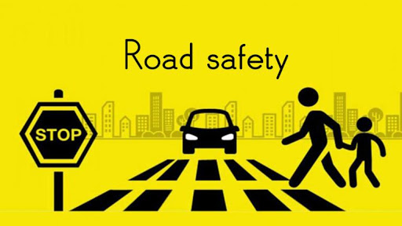
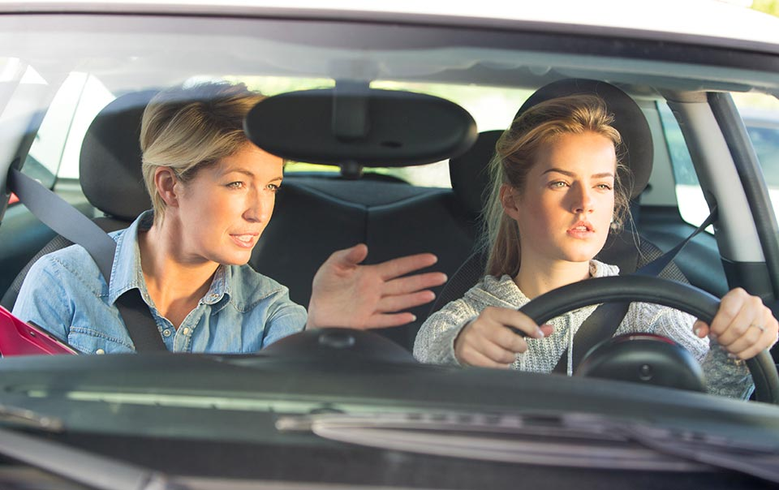
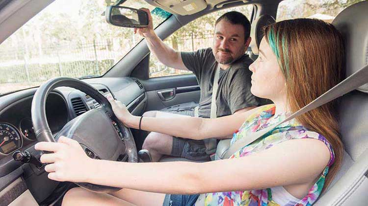

Associations

Our Sponsors
Welcome to the Teenagers Guide to Safe Driving

- According to the Insurance Institute for Highway Safety, teen drivers are nearly 3x more likely than older drivers to be in a fatal car crash per mile driven
- Studies show the risk of a crash is especially high during the first months of having a license
- Male teens are at higher risk of fatal automobile collisions than females
UNDERSTAND THE RISKS

- Emphasize and Focus on defensive driving
- Staying a safe distance from the car in front and remaining aware of what’s going on around you
- PUT THE BRAKES ON SPEEDING! According to the NHTSA, 35% of male drivers between ages 15 to 20 who were involved in fatal crashes in 2012 were speeding
- The NHSTA reports that more than 50% of people ages 13-20 who died in car crashes in 2013were not wearing a seat belt
PRACTICE, PRACTICE, PRACTICE

- According to Service Ontario, as a teen, you can become a safer driver By spending at least 30 to 50 hours on the road biweekly with a fully liscensed adult on the passenger seat over a period of six months
- Mix it up on different roads at different times of day with different weather and traffic conditions
- Limit night driving until you and your guiding adult are comfortable